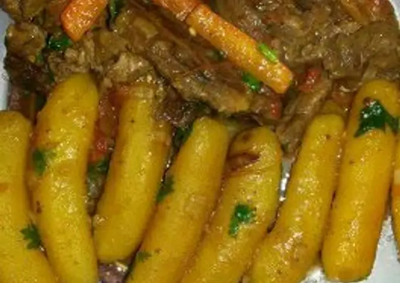

Delicious Matoke Recipe

MATOKE
Matoke is a nutrient rich dish made from green bananas. The key to making good matokeis to getgood bananas.
For this recipe, we will use bone broth as it adds flavour and healthy soup.
Ingredients
Behold; a list of ingredients used:
- 10 large green bananas
- 500ml bone broth
- 1 large onion
- 5 garlic cloves
- 1 medium eggplant
- 2 large carrots
- 2 tomatoes
- 150g peas
- 2 tablespoons tomato paste
- 1 teaspoon ginger powder
- 1 teaspoon Tumeric
Directions
- Peel the bananas and cut in half.
- Chop your vegetables into desired size and pound garlic in a mortar.
- Fry onions until golden brown then add garlic and reduce heat.
- Add eggplant and fry for 3 mins then add carrots and fry an additional 3 minutes.
- Add tomato, tomato paste, salt and spices and cover.
- Add the peas and bonebroth and allow to simmer for 2 mins.
- Add the matoke and cook about 30 mins untila fork can pierce through.
- Serve while hot. Enjoy with avocado or meat stew.